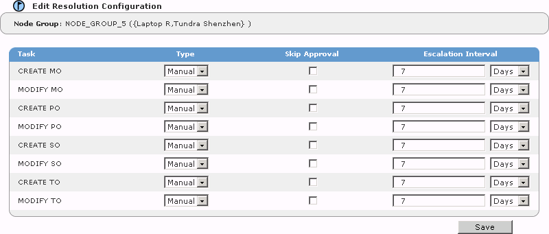

Editing Resolution Process Definitions
Resolution Process Definitions can be edited only by users who have the Business Admin function.
To edit a
resolution
process
definition
1 In the Functions drop-down list, select Business Admin.
2 Click the Resolution tab. The Resolution Configuration page appears.
3 Click

for the Node Group you want to edit the Resolution Configuration for. The
Edit Resolution Configuration page appears.

4 For each possible task in the Node Group, make any changes to its definition.
|
Field Name
|
Description
|
|
Task
|
The various tasks that can be configured.
|
|
Type
|
Select the type of Resolution Task Definition:
· Automatic - The task will be performed automatically.
· Manual - The task will be performed manually, outside the Timogen Adaptive Controller system. Task reconciliation must also be done manually.
|
|
Skip Approval
|
Select if approval for this task on this Node Group is not required.
|
|
Escalation Interval
|
When a task is not completed within a specified time, the resolution can be escalated to an additional set of individuals. Enter a number for the Escalation Interval and select hours or days.
|
5 Click Save.